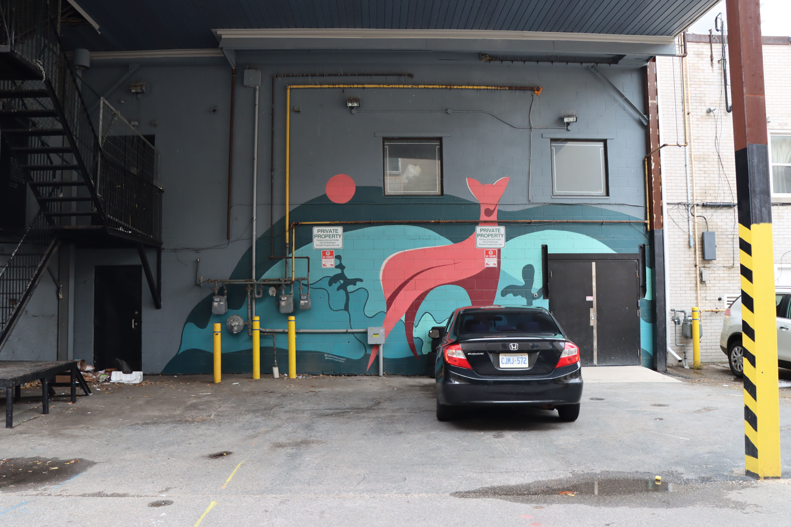

TITLE: DOE YEAR: 2021 MEDIUM: Exterior acrylic paint
About the artist: August Swinson and Luke Swinson are a father-son duo exploring the beautiful Canadian landscape as well as childhood memories. August and Luke instinctively capture nature in their artworks. Their murals evoke a sense of fun reminding us of our innocent age and invite younger generations to connect with their roots.
